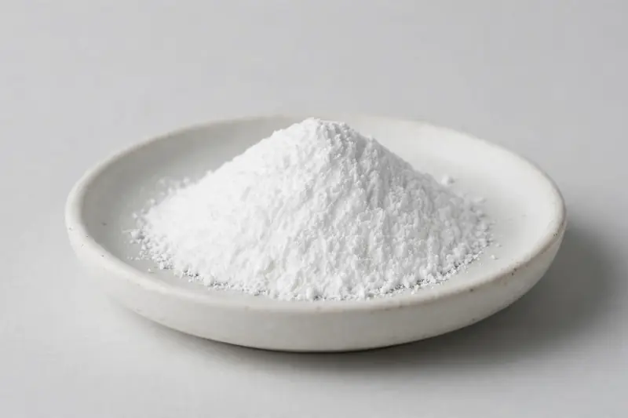

Creatine monohydrate — a high-purity, micronized-option powder for sports nutrition and muscle-support formulations.

Overview
Creatine monohydrate (CAS 6020-87-7) remains one of the highest-volume actives in sports nutrition, used in powders, capsules and ready-to-mix formats. Buyers commonly request 99.5%+ by HPLC and often specify micronized grades around 200 mesh for improved dispersion and mouthfeel. As a Xi'an-based trading company sourcing through vetted partner producers, we align on your mesh, purity and packaging requirements and confirm feasibility honestly before you commit.
Specifications below reflect commonly requested options in the market — not a stock list. Share your target spec and we'll confirm exactly what we can supply, honestly.
| Specification | Details |
|---|---|
| Botanical identity | Creatine monohydrate, white crystalline powder, micronized options available |
| Marker compound | Creatine monohydrate — commonly requested: 99.5%+ (HPLC); micronized ~200 mesh |
| Appearance | White fine powder |
| Analytical methods | Methods referenced in buyer specifications: HPLC |
| Mesh size | Typically 80–100 mesh (confirm per inquiry) |
| Testing | COA/TDS arranged on request; scope agreed per your spec |
Applications
Documentation
We don't claim in-house labs or certifications we don't hold. COA and TDS documents can be arranged on request, and testing scope is agreed against your specification before supply.
FAQ
Related products
Panax ginseng
Key marker: Ginsenosides
View specs →Curcuma longa
Key marker: Curcuminoids
View specs →Berberis aristata
Key marker: Berberine
View specs →L-Carnitine
Key marker: L-Carnitine
View specs →Taurine
Key marker: Taurine
View specs →Buyer guides
Buyer’s guide
Identity, actives, heavy metals, micro — what each section of a Certificate of Analysis means, and the red flags that tell you to walk away.
Read the guide →Buyer’s guide
Section-by-section COA walkthrough — marker assays, heavy metals, micro panels, red flags, and a buyer checklist.
Read the guide →Send your target spec and volumes — we'll respond with a tailored quotation.
Request a Quote